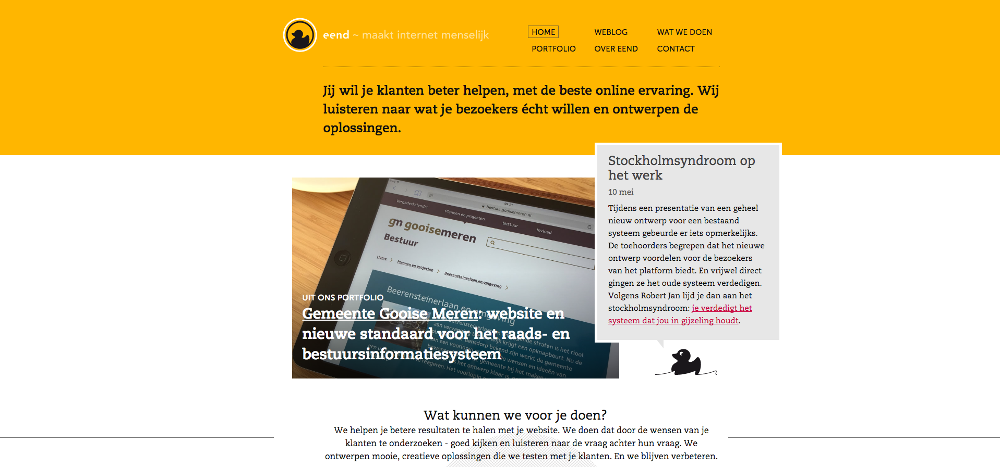
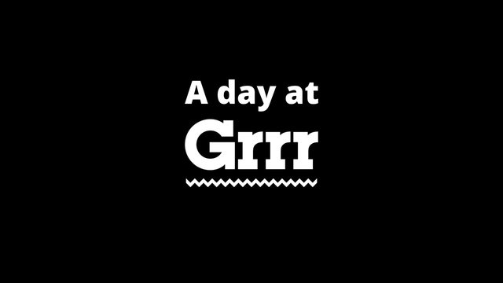
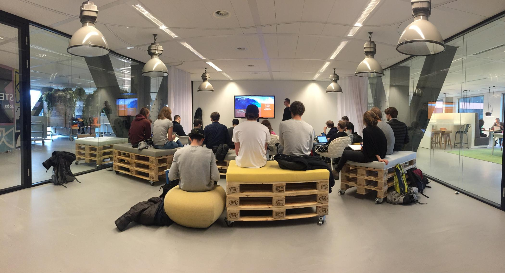
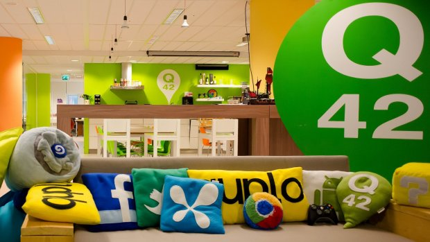

Weekly Nerd week 1
Arjan Westerdiep
 Tijdens de eerste weekly nerd van de minor Web development - Everything web was Arjan Westerdiep gastspreker.
Hij is al jaren actief op het gebied van pixel art. Voor het zijn pixel at kan maken begint hij met een schets en dit blijft niet bij één schets maar zo nu en dan wel zes of meer. Dit doet hij om te zien of een schets nou echt al goed is of beter kan. Volgens Arjan is het lastig om te zien wanneer iets goed of fout is als het gaat om illustraties. Als de schets(en) goed zijn zet hij deze om in Paint naar pixel art. Zo wilde hij zijn pixel art ook wel eens tot leven brengen of meer waarde aan toevoegen. Dit deed hij toen Java uitkwam en ging daar vol op mee aan de slag. Wat hij het publiek al gauw wou meegeven in zijn college is:
Tijdens de eerste weekly nerd van de minor Web development - Everything web was Arjan Westerdiep gastspreker.
Hij is al jaren actief op het gebied van pixel art. Voor het zijn pixel at kan maken begint hij met een schets en dit blijft niet bij één schets maar zo nu en dan wel zes of meer. Dit doet hij om te zien of een schets nou echt al goed is of beter kan. Volgens Arjan is het lastig om te zien wanneer iets goed of fout is als het gaat om illustraties. Als de schets(en) goed zijn zet hij deze om in Paint naar pixel art. Zo wilde hij zijn pixel art ook wel eens tot leven brengen of meer waarde aan toevoegen. Dit deed hij toen Java uitkwam en ging daar vol op mee aan de slag. Wat hij het publiek al gauw wou meegeven in zijn college is:
'Als iets routine wordt, moet je verder met wat anders.'
Tijdens het college kwam hij met een product dat hij het gemaakt waar in je een 3d model kreeg te zien van een hamburger. Dit was niet zomaar een 3d model, in dit model werd een hamburger opgebouwd met legosteentjes en kreeg je ook te zien hoeveel steentjes je nodig had. Arjan had dit volledig in JavaScript geprogrammeerd en een eigen algoritme geschreven om alles uit te reken. Wat hem bij het volgende bracht, omdat het opbouwen van bepaalde pixel art of producten die hij maakt veel rekenkracht kost en hij dit niet via de dom wou laten gaan ging hij opzoek naar een oplossing. Zoals hij zelf dan ook zei:
'Je moet kritisch op je zelf zijn, want er is altijd ruimte voor verbetering.
Zo ging hij uitzoeken wat de
GPU in je computer is en wat voor mogelijkheden deze biedt. Doordat je GPU ook 3D technieken ondersteund en kan uitvoeren is hij gaan kijken of hij zijn 3D programma's niet daar op kon laten afspelen zodat het geen effect had op de DOM en de snelheid waarmee het programma werd uitgevoerd optimaal bleef. Hij liet nog meer voorbeelden zien, van een eigen vector teken programma tot aan een visualisatie waarin je die camera stand kon volgen. Gaande zijn college begon hij over het gebruik van een
web worker. Iets waar ik zelf nog nooit van gehoord had. Volgen Arjan is het een stuk Javascript dat los staat van je DOM, het laat de rest van je Javascript code doorlopen tijdens het inladen van de pagina. Nu wist ik nog steeds niet precies wat een web worker nou deed dus ben ik zelf even opzoek gegaan. Een web worker is een stuk Javascript dat op de achtergrond onafhankelijk van andere scripts draait en de snelheid niet beïnvloedt. Tijdens het inladen van de HTML wordt ook de Javascript ingeladen. Als dit gebeurd is de pagina nog niet bruikbaar. Met een webworker voorkom je dit. Als één van de laatste tips die hij ons mee gaf was
'Declareer je vars altijd aan het begin van je functie'
Voor meer informatie over Arjan Westerdiep zijn werk klik dan
hier.
Weekly Nerd week 2
Marije Schaake

Eend is een webdesign bureau met als motto 'maakt internet menselijk'. Het bedrijf bestaat uit 4 personen en ze werken vooral samen met freelancers. Eend maakt alleen de ontwerpen van de producten, het bouwen ervan doen zij niet. Dit word door andere bedrijven gedaan waar zij mee samenwerken of waar hun klant mee samenwerkt. Tijdens de les kregen wij de website van de HvA uitgeprint om deze te ontleden. Deze werkwijze hanteren zij bij eend om te onderzoeken waarom een website niet goed is en hoe deze beter kan. Door de site te ontleden kan achterhaald worden wat er eigenlijk bij elkaar hoort en welke HTML tag er het beste voor geschikt is. Zij gaan te werk als volgt: stakeholders onterview > gebruikers onderzoek > analyse prototype > gebruikers onderzoek > analyse > verbeteren > implementeren. Het stuk van het eerste gebruikers onderzoek tot aan het laatste gebruikers onderzoek kan meerdere keren herhaald worden tot het product goed genoeg is om te implementeren. Werk van Eend kun je hier bekijken.
Weekly Nerd week 3
Donny Wals
Tijdens deze weekly nerd heeft Donny uitgelegd hoe de developers bij looklive werken en waarmee. Het ging voor namelijk over Github, waarom zij het gebruiken. Hun voornaamste redenen zijn dat ze via git code kunnen delen, de geschiedenis makkelijk terug kunnen zien van de code, het is makkelijk samenwerken via github en ze kunnen gebruik maken van meerdere branches. Een branch is eigenlijk een kopie van de master code. In de kopie kan een feature toegepast worden en die kan dan weer (als de code goed is) gemerged worden met de master code. Om ook zo veel mogelijk taken te automatiseren gebruiken ze een taskmanager genaamd Gulp.
Weekly Nerd week 4
Niels Leenheer
Niels Leenheer is de oprichter van HTML5 test. Via deze website is het mogelijk om te kijken welke score jouw browser krijgt. Deze score is tussen de 0 en de 555 punten. Tijdens zijn college had hij het over vreemde browser. Volgens Niels was de eerste browser ter wereld Gopher. Gopher werkte als een command line tool. Tegenwoordig zijn er onwijs veel browsers, maar er zijn er een stuk meer dan wij denken. We hebben mobiele browsers, waarvan de iPhone browser de eerste goede mobiele browser was, maar welke vreemde browsers zijn er nog meer? Denk aan browsers van game console's, e-readers, smart watches, auto's (zoals tesla) en smart tv's. Niels heeft de meeste van deze vreemde browsers mogen testen.Daar is uit naar voren gekomen dat de browsers van onze smart tv's best goed zij, maar de browsers van de game console's weer achter lopen. Sinds kort is de browser van de xbox one geupdate naar IE edge. Je vraagt je misschien af wie deze browsers nou gebruikt, maar volgens Niels zijn er nog best wat mensen die deze gebruiken. Als jij een keuze moet maken tussen een nieuwe computer of een game console kan het zijn dat je voor de game console kiest en daarom ook gebruik gaat maken van de browser die deze levert.
Weekly Nerd week 5
Peter-Paul Koch (PPK)
Peter Paul Koch is oprichter/eigenaar van de website quirksmode. Hier beschrijft hij zichzelf als een mobile platform strategist. Aan het begin van het college gaf PPK aan dat wat hij ons ging vertellen zijn opinie is over hoe wij tegenwoordig te werk gaan als web developers. Volgens hem gebruiken we te veel framework, libraries en zijn er te veel features voor in de browser. Het onderzoeken van browsers is volgens PPK een Nederlandse aangelegenheid. Kijk maar naar HTML 5 test en can i use. Beide websites zijn gemaakt door Nederlanders. Iets wat ik van can i use niet wist.
Volgens PPK zijn er 4 problemen:
- Web developers want to emulate native apps, which I think is not possible.
- This causes browser vendors to add more and more features.
- Also, we get more tools that become a problem instead of solving one.
- People who're new to the web often think the web is just one platform.
Het volledige college ging volledig over deze 4 problemen. Volgens PPK proberen wij tegenwoordig native apps na te bouwen in de browser, maar zal deze nooit zo werken als een native app. De web-app moet eerst met de browser praten en dan met het os waar de browser op draait, waar de native apps comminiceren met het os zonder tussen komst van de browser. Vanwege de drang om native apps na te maken in de browser (zoals Google docs) worden er meer en meer features uitgebracht voor browsers om deze native functionaliteiten te kunnen na bootsen.
Volgens PPK hebben we nu te veel features, zoveel dat wij webdevelopers ze niet eens allemaal kennen of weten hoe ze precies werken.
Peter stelt voor om een jaar lang geen features toe te voegen aan browsers zodat andere browsers die achter lopen een inhaal slag kunnen doen en wij developers features bij kunnen leren die we nog niet kenden.
Enigzins ben ik het wel met PPK eens over deze stelling, maar al deze features maken de gebruikers ervaring met de browser ook een stuk beter en het is ook niet meer nodig om elke feature te kennen. Mocht je een feature nodig hebben dan kun je deze in korte tijd leren gebruiken en toepassen.

Mattijs Bliek noemt zichzelf een Front-end Designer bij GRRR. Naar mijn mening is de titel UI developer beter, maar goed. GRRR is onder andere de maker van die nieuwe CMD beeldtaal en de nieuwe website van de melkweg. Zijn college ging over de grey space tussen front-end developers en UX designers. UX design is iets waar UI designers van zeggen dat het niet hun taak is en front-end developers ook van zeggen dat het niet hun taak is, maar van wie is deze dan? Volgens Mattijs Bliek de taak van de front-end designer een term die bedacht is door BRad Frost. Een front-end designer moet van de volgende punten een zekere basis kennis hebben:
- Ze begrijpen de basis principes van UX design
- Ze hebben een oog voor design
- Ze kunnen uit de voeten met JavaScript
- Ze begrijpen hoe belangrijk back-end development is
Mattijs geeft aan dat je als front-end designer goede en onderhoudbare code moet schrijven, want slechte code lijdt immers ook tot een slechte UX.
Het werkgebied van front-end development/design wordt steeds groter en belangrijker binnen ons werkveld. Volgens Mattijs omdat de flow van ons werk aan het veranderen is. Vroeger was de flow als volgt:
strategie > design > development > content
Tegenwoordig is de flow meer als volgt:
strategie > content > design > development, maar dan in de vorm van een loop.
Tijdens de rest van het college vond ik dat hij ons meer tips gaf over hoe wij beter te werk kunnen gaan, zoals tekst snippets gebrukken van onze code en een editor uitzoeken die onze behoeften tegemoet komt. Hij kaarte nog een algemeen bekend probleem aan namelijk dat van mobiele websites. Die zijn tegenwoordig groter en groter om binnen te halen. Als voorbeeld de CMD website voor op mobiel. Ookal krijgen we steeds grotere databundels verbruiken we ook steeds meer data door de grote websites. Dit door libraries als jQuery, waar we misschien maar 10% van gebruiken of frameworks als Meteor of Angular.
Copyright 2016 Vasilis van Gemert, all rights reserved
Laat me beginnen met WAUW! Wat een toffe en inspirerende presentatie was dit. Zelf heb ik een klein verleden bij ING en mijn familie een wat groter, dus was het tof om te zien waar ze nu heen willen gaan met het bedrijf. Ron had het in dit college voornamelijk over welke kant hij met ING op wil qua omgaan met de gebruikers. Hiervoor kijken ze veel naar andere bedrijven. Niet banken in het specifiek, maar bedrijven als uber, paypal of amazon. Volgens Ron zie je steeds meer bedrijven die zich richten op een onderdeel van een bank. Vroeger keken banken naar elkaar, als de één iets lanceerde en het was een succes dan deed de andere bank dat ook. Tegenwoordig is hun zicht dus een stuk breder. Ze leten specifiek op de gebruikerservaring die gebruikers hebben met een product en hoe het process van dit gebruik zich verloopt. Ron spreekt over "touchpoint", a point of interaction involving a specific human need in a specific time and place. Volgens Ron moeten gaan nadenken over person(with need) and brand (value proposition) en het touchpoint waarop deze elkaar raken, maar hoe ontwerpen we dit touchpoint, want dit moet relevant zijn, gepast, betekenisvol en endearing. Tot slotte moeten deze zaken connected zijn. Ze richten zich niet meer op een industrie, maar op gebieden en ervaringen. Waar ze heel graag naartoe willen is het ontdekken van nieuwe businessmodellen en interactie. In hun ING bankieren APP is goed te zien dat zij deze nieuwe weg zijn ingeslagen. Wat ik ook enorm tof vond is dat zij de eerste bank in Nederland zijn die bijdragen aan open source software, maar het zelf ook gebruiken.
Weekly Nerd week 8
Arthur van Schravendijk
 Arthur van Schravendijk is zelf CMD student. Tijdens de studie dacht hij altijd een designer te zijn tot hij les van Justus Sturkenboom kreeg. Tijdens deze lessen kwam hij erachter toch een developer te zijn. Bij het hoorcollege kwam hij vertellen over de minor die hij had gedaan, namelijk intelligent environments. Daar heeft hij de keukenkas gemaakt. Het idee is dat je niet meer op je keukenplantjes hoefde te letten en alles geautomatiseerd werd. Hiervoor heeft hij met zijn team gebruik gemaakt van Arduino's en sensoren om zo allerlei data in de kas te meten. Aan de hand van die data werd bepaald of de planten water nodig hadden en hoeveel.
Arthur van Schravendijk is zelf CMD student. Tijdens de studie dacht hij altijd een designer te zijn tot hij les van Justus Sturkenboom kreeg. Tijdens deze lessen kwam hij erachter toch een developer te zijn. Bij het hoorcollege kwam hij vertellen over de minor die hij had gedaan, namelijk intelligent environments. Daar heeft hij de keukenkas gemaakt. Het idee is dat je niet meer op je keukenplantjes hoefde te letten en alles geautomatiseerd werd. Hiervoor heeft hij met zijn team gebruik gemaakt van Arduino's en sensoren om zo allerlei data in de kas te meten. Aan de hand van die data werd bepaald of de planten water nodig hadden en hoeveel.
Weekly Nerd week 9
Guido Bouman

Guido is interaction engineer bij Q42. Zij hebben projecten gedaan als de website van het rijksmuseum, ikea nederland, staatsloterij, Design museum london (hier zij een webby award meegewonnen voor de menu interactie) en de phillips hue website.
Tijdens dit college kwam Guido vertellen over een recente blog die hij had geschreven, namelijk hacking the coffee machine.
Guido heeft bij Q42 met behulp van een rasberry pie hun koffie machine weten te hacken. De rasberry pie heeft hij aangesloten op de seriele poorten van de koffie machine. Uiteindelijk is het hem gelukt om met wat code dit apparaat uit te lezen. Zo kun je nu op hun website zien hoeveel bakjes koffie er bij hun al zijn gezet. Uiteindelijk zijn ze geswitched van een rasberry pie naar photon. De hack om het op de website te zetten werkt als volgt: photon (die aangesloten zit op de koffie machine) -> q42 api -> q42.nl -> client. De photon stuurt dus de data naar hun q42 api, deze data wordt vervolgens weer gebruikt op q42.nl en de client krijgt deze data te zien als zij op de website komen.
Weekly Nerd week 10
Github
 Ze hebben pas twee weken hun kantoor in Amsterdam en wij krijgen daar al een college, hoe tof!
Tijdens dit college kregen we van één van de werknemers van Github uitleg over hoe je nou hoort te werken met Github en hoe zij hier mee werken. Wat al snel werd aangegeven is het belang van branches in je project. Zij maken voor elke feature of fix die wordt verricht een aparte branch aan. Er werd ook gezegd:
Ze hebben pas twee weken hun kantoor in Amsterdam en wij krijgen daar al een college, hoe tof!
Tijdens dit college kregen we van één van de werknemers van Github uitleg over hoe je nou hoort te werken met Github en hoe zij hier mee werken. Wat al snel werd aangegeven is het belang van branches in je project. Zij maken voor elke feature of fix die wordt verricht een aparte branch aan. Er werd ook gezegd:
Working with branches brings you on safeshore.
Ook werd het belang van pull request onderbouwd. Zij gebruiken een pull request dus meer als een soort van code review. Teamleden/collega's etc kunnen jouw pull request bekijken en zonodig issues daar op aanmaken mocht ze een fout vinden. Deze fout kun je dan herstellen en je pull request laten mergen met de master. Die tools die Github voornamelijk gebruikt zijn:
- Slack
- Issues
- Pull requests
- GEEN EMAIL
Alle communicatie verloopt via slack zodat zij van elkaar kunnen leren en elkaar kunnen helpen. Doordat veel personeel van Github in verschillende tijdzones werkt is het handig voor hun dat zij alles in Slack kunnen terug lezen zodat ze weer op de hoogte zijn en misschien nieuwe technieken of mogelijk heden leren.
Uiteindelijk werd de talk afgesloten met een quiz over Github, deze heb ik helaas niet gewonnen :(.
Weekly Nerd week 11
Thijs van der Vossen
Thijs runt een klein bureau genaamd fingertips, zij bestaan al ogeveer 15 jaar en bouwen voornamelijk apps, gevarieerd van kleine tot grote projocten. Momenteel hebben ze ook veel internationale klanten in de VS, maar ook Zwitserland. Ze vinden makkelijk of verkrijgen makkelijk klanten omdat ze een klein team hebben en al lang bestaan, maar omdat zij veel hebben bijgedragen aan opensource projecten in het verleden en door veel mond op mond reclame komen de klanten naar hun toe.
Thijs is eind jaren 90’ begonnen met dit werk naast zijn studie. Hij geeft ook aan dat het belangrijk is om zo snel mogelijk voor jezelf te beginnen naast je studie of naast je baan. Hierdoor kun je alleen maar projecten aannemen waarvan jij zelf denkt die leuk te vinden. Zo ontwijk je de projecten waar je helemaal geen zin in hebt. Over het uurtarief dat je moet hanteren voor een project zegt hij het volgende:
Voor het uurtarief moet je eerst kijken naar het aantal uur dat je erin denkt te steken, dan bepaal je het budget voor het project en vanuit daar bereken je het uurloon.
Wat je niet wil doen is werken voor mensen die je niet helemaal vertrouwd. Het heeft voor Thijs meer te maken met de gedachte dat ze een probleem kunnen krijgen met de klant of het bedrijf dat je inhuurt, dan zit het waarschijnlijk fout en dan loopt het waarschijnlijk mis.